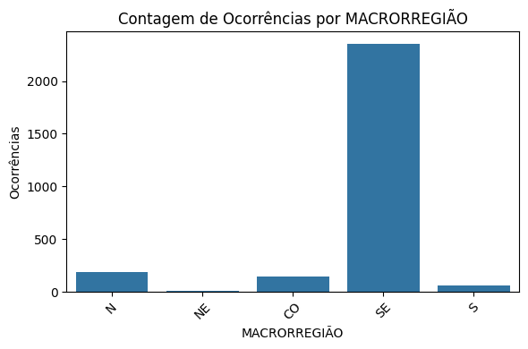
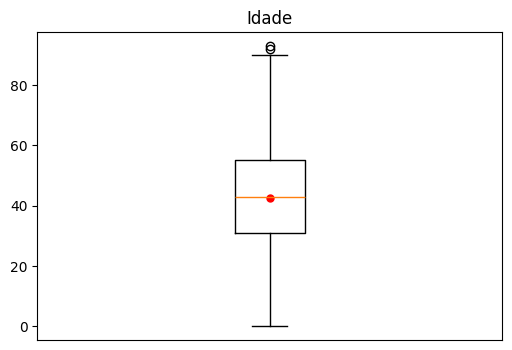
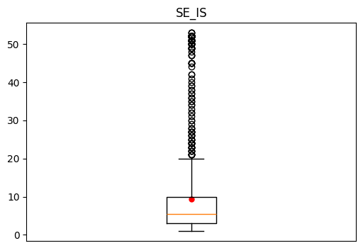

Esse caderno trata da predição de óbitos humanos por febre amarela no Brasil por aprendizado de máquinas supervisionado, a partir de uma base de dados pública disponibilizada pelo Mistério da Saúde do Brasil.
A fonte dos dados pode ser encontrada no seguinte endereço:
def t_ocorrencia(coluna):# Valores onde há ocorrência valores =list(coluna.value_counts().index)# Quantidade de ocorrências por região ocorrencia =list(coluna.value_counts())# Quantidade total de ocorrências adaptado à porcentagem n =sum(ocorrencia) *100**(-1)for i inrange(len(valores)):if i <10:print(f'- A variável {valores[i]} representa {ocorrencia[i]/n:.2f}% do total.')elif i ==10:print('[...]')else:pass
Numeralização por Binários
Consiste na transformação das variáveis qualitativas em binário.
# Funçãodef coluna_letras_para_binario(dataframe, coluna):# Cria variáveis dummy para a coluna especificada dummies = pd.get_dummies(dataframe[coluna], prefix=coluna, drop_first=True).astype(int)# Adiciona as variáveis dummy ao DataFrame original dataframe = pd.concat([dataframe, dummies], axis=1)# Remove a coluna original dataframe.drop(coluna, axis=1, inplace=True)return dataframe
Numeralização por Percentual
Consiste na transformação das variáveis qualitativas em seu percentual de aparição.
def coluna_letras_para_numeros(dataframe, coluna):# Calcular a frequência relativa de cada categoria frequencia_relativa = dataframe[coluna].value_counts(normalize=True).to_dict()# Substituir os valores categóricos pelos valores numéricos correspondentes dataframe[coluna] = dataframe[coluna].map(frequencia_relativa)return dataframe
Substituição de nulos por mediana
Consiste na substituição dos valores nulos de uma coluna por sua mediana.
def substituir_nulos_por_mediana_coluna(dataframe, coluna):# Calcula a mediana da coluna mediana_coluna = dataframe[coluna].median()# Substitui os valores nulos pela mediana da coluna usando loc dataframe.loc[dataframe[coluna].isnull(), coluna] = mediana_colunareturn dataframe
Substituição de nulos por média
Consiste na substituição dos valores nulos de uma coluna por sua média.
def substituir_nulos_por_media_coluna(dataframe, coluna):# Calcula a media da coluna media_coluna = dataframe[coluna].mean()# Substitui os valores nulos pela mediana da coluna usando loc dataframe.loc[dataframe[coluna].isnull(), coluna] = media_colunareturn dataframe
K-Means
from sklearn.cluster import KMeansdef c_kmeans(k, df): km = KMeans(n_clusters=k, init='k-means++', max_iter=300, n_init=10, random_state=0) km.fit(df)return km
Processamento de Colunas
‘MACRORREG_LPI’
Como dito no início do caderno, apenas a predição para a região sudeste será feita. Os motivos serão explicados a seguir, em uma análise de ocorrência por região.
# Regiões onde há ocorrênciat_ocorrencia(df['MACRORREG_LPI'])
- A variável SE representa 85.21% do total.
- A variável N representa 6.78% do total.
- A variável CO representa 5.33% do total.
- A variável S representa 2.25% do total.
- A variável NE representa 0.44% do total.
import matplotlib.pyplot as pltimport seaborn as snsplt.figure(figsize=(6, 4))sns.countplot(x='MACRORREG_LPI', data=df)plt.xlabel('MACRORREGIÃO')plt.ylabel('Ocorrências')plt.title('Contagem de Ocorrências por MACRORREGIÃO')plt.xticks(rotation=45)plt.tight_layout()plt.show()

Ao analisar a representatividade das regiões nos dados, nota-se a imensa disparidade da região sudeste com as outras. Dado que a soma das outras regiões representa menos de 15% das ocorrências, elas serão unidas em uma só. Após isso os dados da coluna serão transformados em binário visto que a coluna é qualitativa, e possuem poucos dados diferentes.
# Transformando regiões diferentes da sudeste em R que representa Restantedf.loc[df['MACRORREG_LPI'] !='SE', 'MACRORREG_LPI'] ='R'# Transformando variáveis da coluna em bináriodf = coluna_letras_para_binario(df, 'MACRORREG_LPI')df['MACRORREG_LPI_SE'].value_counts()
As duas colunas representam a mesma coisa, visto que uma representa o ddd único de cada estado, e outra representa a sigla de cada estado. Como a coluna ‘UF_LPI’ possui siglas mais facilmente visualizaǘeis, ela será mantida.
Por ilação lógica, se a região sudeste representa a esmagadora maioria das ocorrências, então suas microrregiões representadas pelo ddd também lideram as ocorrências, provocando uma provavel baixa representatividade das outras microrregiões. Logo, seguindo a mesma linha de pensamento das transformações anteriores, as microrregiões que possuírem baixo recorrência estatística serão unidas em uma só.
# Microrregiões onde há ocorrênciat_ocorrencia(df['UF_LPI'])
- A variável MG representa 39.81% do total.
- A variável SP representa 24.91% do total.
- A variável RJ representa 11.13% do total.
- A variável ES representa 9.35% do total.
- A variável GO representa 3.55% do total.
- A variável PA representa 3.44% do total.
- A variável AM representa 1.74% do total.
- A variável SC representa 0.98% do total.
- A variável MT representa 0.98% do total.
- A variável TO representa 0.83% do total.
[...]
De forma a resumir a quantidade de microrregiões sem representatividade, as que possuírem menos de 4% de ocorrência (que curiosamente são as microrregiões que não pertencem a região sudeste) serão transformadas em apenas uma variável. Após isso elas serão transformadas em variáveis numéricas de acordo com seu percentual de ocorrência.
# Transformando microrregiões sem representatividade em R que representa Restantedf.loc[~df['UF_LPI'].isin(['MG', 'SP', 'RJ', 'ES']), 'UF_LPI'] ='R'# Transformando variáveis da coluna em percentual de ocorrênciadf = coluna_letras_para_numeros(df, 'UF_LPI')df['UF_LPI'].value_counts()
Assim como no caso das microrregiões com os ddd’s, as colunas ‘COD_MUN_LPI’ e ‘MUN_LPI’ representam a mesma coisa, logo, a coluna A ‘COD_MUN_LPI’ será excluída, e a ‘MUN_LPI’ tratada.
A coluna possui valores alguns poucos nulos. Para atribuir o valor dessas colunas, será atribuída a cidade com maior ocorrência para a UF que representa a cidade. Isso pois valores centrais como a média ou mediana não fazem sentido, visto que a coluna possui valores qualitativos e um número alto de cidades diferentes.
# Ocorrências de 0.24909355t_ocorrencia(df[df['UF_LPI'] == df['UF_LPI'].unique()[1]]['MUN_LPI'])
- A variável MAIRIPORÃ representa 24.34% do total.
- A variável ATIBAIA representa 7.29% do total.
- A variável SÃO PAULO representa 4.81% do total.
- A variável NAZARÉ PAULISTA representa 4.66% do total.
- A variável GUARULHOS representa 4.08% do total.
- A variável IPORANGA representa 2.77% do total.
- A variável ELDORADO representa 2.33% do total.
- A variável IBIÚNA representa 2.04% do total.
- A variável PIRAJU representa 2.04% do total.
- A variável SANTA ISABEL representa 1.75% do total.
[...]
# Ocorrências de 0.0.39811458t_ocorrencia(df[df['UF_LPI'] == df['UF_LPI'].unique()[2]]['MUN_LPI'])
- A variável LADAINHA representa 4.21% do total.
- A variável JUIZ DE FORA representa 3.75% do total.
- A variável MARIANA representa 3.75% do total.
- A variável NOVA LIMA representa 3.29% do total.
- A variável POTÉ representa 2.38% do total.
- A variável SERRO representa 2.29% do total.
- A variável BARÃO DE COCAIS representa 2.20% do total.
- A variável SABINÓPOLIS representa 2.10% do total.
- A variável NOVO CRUZEIRO representa 1.92% do total.
- A variável TEÓFILO OTONI representa 1.74% do total.
[...]
# Transformando valores nulos em cidades com mais ocorrências para cada macrorregiãodf.loc[(df['MUN_LPI'].isnull()) & (df['UF_LPI'] == df['UF_LPI'].unique()[1]), 'MUN_LPI'] =str('MAIRIPORÃ')df.loc[(df['MUN_LPI'].isnull()) & (df['UF_LPI'] == df['UF_LPI'].unique()[2]), 'MUN_LPI'] =str('LADAINHA')df_final.loc[(df_final['MUN_LPI'].isnull()) & (df_final['UF_LPI'] =='MG'), 'MUN_LPI'] =str('MAIRIPORÃ')df_final.loc[(df_final['MUN_LPI'].isnull()) & (df_final['UF_LPI'] =='SP'), 'MUN_LPI'] =str('LADAINHA')# Transformando variáveis da coluna em percentual de ocorrênciadf = coluna_letras_para_numeros(df, 'MUN_LPI')print('Valores nulos:', sum(df['MUN_LPI'].isnull()))
Valores nulos: 0
SEXO
A coluna sexo possui apenas duas variáveis. Logo, o único procedimento a se tomar é transformar a coluna em numérico binário.
# Transformação em bináriodf = coluna_letras_para_binario(df, 'SEXO')df['SEXO_M'].value_counts()
SEXO_M
1 2281
0 477
Name: count, dtype: int64
IDADE
A coluna ‘IDADE’ é quantitativa, e o único problema que ela apresenta são seus valores nulos.
# Remover vírgulas e converter para floatdf['IDADE'] = df['IDADE'].str.replace(',', '.').astype(float)df_final['IDADE'] = df_final['IDADE'].str.replace(',', '.').astype(float)print(f"Existem {len(df['IDADE'].value_counts())} variáveis diferentes e {df['IDADE'].isnull().sum()} valores nulos.")
Existem 193 variáveis diferentes e 2 valores nulos.
Dado a existência de uma grande quantidade de variáveis, faz mais sentido preencher os valores nulos com medidas centrais.
#Excluindo nulos em DataFrame teste para analisar boxplotdf_boxplot = df.dropna(subset=['IDADE'])# Plotando o gráfico boxplotplt.figure(figsize=(6, 4))plt.boxplot(df_boxplot['IDADE'])plt.scatter(1, df_boxplot['IDADE'].mean(), color='red', marker='o', s=25)plt.tick_params(axis='x', which='both', bottom=False, top=False, labelbottom=False)plt.title('Idade')plt.show()

Como pode ser visto no gráfico da idade, existem poucos outliers, e uma distribuição consistente de idade. A média representada pelo ponto vermelho está em cima da linha da mediada, o que reafirma a boa distribuição dos valores. Assim sendo, para substituir os valores nulos, a medida central utilizada será a média.
# Substituindo nulos por médiasubstituir_nulos_por_media_coluna(df, 'IDADE')substituir_nulos_por_media_coluna(df_final, 'IDADE')print('Valores nulos:', sum(df['IDADE'].isnull()))
Valores nulos: 0
DT_IS
A coluna ‘DT_IS’ representa a data exata dos início dos sintomas, contudo, existem outras colunas como a ‘SE_IS’, ‘MES_IS’ e ‘ANO_IS’ que separam a data em semana, mês e ano do início dos sintomas, tornando essa coluna inútil. Logo, ela será excluída.
A coluna ‘SEI_IS’ é numérica, e o único problema que ela apresenta são seus valores nulos.
print(f"Existem {len(df['SE_IS'].value_counts())} variáveis diferentes e {df['SE_IS'].isnull().sum()} valores nulos.")
Existem 51 variáveis diferentes e 16 valores nulos.
Dado a existência de uma grande quantidade de variáveis, faz mais sentido preencher os valores nulos com medidas centrais.
#Excluindo nulos em DataFrame teste para analisar boxplotdf_boxplot = df.dropna(subset=['SE_IS'])# Plotando o gráfico boxplotplt.figure(figsize=(6, 4))plt.boxplot([df_boxplot['SE_IS']])plt.scatter(1, df_boxplot['SE_IS'].mean(), color='red', marker='o', s=25)plt.tick_params(axis='x', which='both', bottom=False, top=False, labelbottom=False)plt.title('SE_IS')plt.show()

Analisando o gráfico, fica evidente que a alta quantidade de outliers está deslocando a média significativamente da região com uma maior densidade de dados. Logo, para este caso, os valores nulos serão substituídos pela mediana.
# Substituindo nulos por medianasubstituir_nulos_por_mediana_coluna(df, 'SE_IS')substituir_nulos_por_mediana_coluna(df_final, 'SE_IS')print('Valores nulos:', sum(df['SE_IS'].isnull()))
Valores nulos: 0
MES_IS
A coluna ‘MES_IS’ é numérica, e o único problema que ela apresenta são seus valores nulos.
print(f"Existem {len(df['MES_IS'].value_counts())} variáveis diferentes e {df['MES_IS'].isnull().sum()} valores nulos.")
Existem 12 variáveis diferentes e 11 valores nulos.
# Ocorrências de mesest_ocorrencia(df['MES_IS'])
- A variável 1.0 representa 46.60% do total.
- A variável 2.0 representa 22.35% do total.
- A variável 3.0 representa 14.27% do total.
- A variável 4.0 representa 6.63% do total.
- A variável 12.0 representa 5.93% do total.
- A variável 5.0 representa 1.78% do total.
- A variável 6.0 representa 0.91% do total.
- A variável 7.0 representa 0.40% do total.
- A variável 11.0 representa 0.36% do total.
- A variável 9.0 representa 0.33% do total.
[...]
O mês 1 aparece com uma frequência muito alta, logo, faz mais sentido atribuir os valores nulos a ele.
# Transformando valores nulos em 1, que representa o mês de janeirodf.loc[df['MES_IS'].isna(), 'MES_IS'] =1.0df_final.loc[df_final['MES_IS'].isna(), 'MES_IS'] =1.0print('Valores nulos:', sum(df['MES_IS'].isnull()))
Valores nulos: 0
‘ANO_IS’ e ‘MONITORAMENTO_IS’
As colunas ‘ANO_IS’ e ‘MONITORAMENTO_IS’ representam objetivamente a mesma coisa, logo, por a coluna ‘ANO_IS’ já ser numérica, a coluna ‘MONITORAMENTO_IS’ será excluída.
Esta é a coluna que se pretende prever, por isso, ela será dividida em duas, as que possuem uma resposta, e as que as respostas foram ignoradas. Por fim, as que possuíram respostas serão usadas para prever com base nas características das outras colunas se o indivíduo morreu ou não.
# DataFrame para treinodf_treino = df[df['OBITO'] !='IGN']df_treino = coluna_letras_para_binario(df_treino, 'OBITO')# DataFrame que se pretende preverdf_predicao = df[df['OBITO'] =='IGN']df_predicao = coluna_letras_para_binario(df_predicao, 'OBITO')
Normalizando colunas
Com os dois DataFrames definidos, agora basta normalizar as colunas para que eles fiquem na mesma escala.
from sklearn.preprocessing import MinMaxScaler# Inicializa o scalerscaler = MinMaxScaler()# Normalizando as colunas do DataFramefor coluna in df_treino.columns: df_treino[coluna] = scaler.fit_transform(df_treino[[coluna]])if coluna !='OBITO_SIM': df_predicao[coluna] = scaler.fit_transform(df_predicao[[coluna]])
Predição
Testando acurácia para diferentes agrupamentos
Para escolher o melhor modelo de acordo com o melhor agrupamento de dados, serão feitos testes que vão de 2 a 20 grupos para todos os métodos de predição, e o modelo com número de agrupamento que possuir a melhor acurácia será o escolhido.
import warningsfrom sklearn.model_selection import train_test_splitfrom sklearn.metrics import accuracy_scorefrom sklearn.exceptions import ConvergenceWarningfrom sklearn.gaussian_process import GaussianProcessClassifierfrom sklearn.neural_network import MLPClassifierfrom sklearn.calibration import CalibratedClassifierCVfrom sklearn.dummy import DummyClassifierfrom sklearn.ensemble import (GradientBoostingClassifier, BaggingClassifier, AdaBoostClassifier, ExtraTreesClassifier, RandomForestClassifier, HistGradientBoostingClassifier)from sklearn.naive_bayes import (BernoulliNB, CategoricalNB, ComplementNB, GaussianNB, MultinomialNB)from sklearn.discriminant_analysis import (LinearDiscriminantAnalysis, QuadraticDiscriminantAnalysis)from sklearn.neighbors import (KNeighborsClassifier, NearestCentroid, RadiusNeighborsClassifier)from sklearn.svm import (SVC, NuSVC, LinearSVC)from sklearn.linear_model import (PassiveAggressiveClassifier, Perceptron, RidgeClassifier, RidgeClassifierCV, SGDClassifier)# Separando as variáveis independentes (X) da variável dependente (y)X = df_treino.drop('OBITO_SIM', axis=1)y = df_treino['OBITO_SIM']# Dividindo o conjunto de dados em treino e testeX_train, X_test, y_train, y_test = train_test_split(X, y, test_size=0.3, random_state=42)print('|Agmts.\t|Melhor Modelo\t\t\t|Acrc.\t|')for i inrange(2,12):# Treinando o modelo KMeans apenas com as features de treino kmeans = c_kmeans(i, X_train) X_train_clusters = kmeans.fit_predict(X_train)# Atribuindo os clusters aos dados de teste usando os centroids do modelo treinado X_test_clusters = kmeans.predict(X_test)# Adicionando as features de cluster ao conjunto de dados de treino e teste X_train_clustered = pd.concat([X_train.reset_index(drop=True), pd.get_dummies(X_train_clusters, prefix='cluster')], axis=1) X_test_clustered = pd.concat([X_test.reset_index(drop=True), pd.get_dummies(X_test_clusters, prefix='cluster')], axis=1)# Treinando e avaliando modelos models = { 'GradientBoostingClassifier': GradientBoostingClassifier(random_state=42),'AdaBoostClassifier': AdaBoostClassifier(random_state=42),'BaggingClassifier': BaggingClassifier(random_state=42),'ExtraTreesClassifier': ExtraTreesClassifier(random_state=42),'RandomForestClassifier': RandomForestClassifier(random_state=42),'HistGradientBoostingClassifier': HistGradientBoostingClassifier(random_state=42),'BernoulliNB': BernoulliNB(),'CategoricalNB': CategoricalNB(),'ComplementNB': ComplementNB(),'GaussianNB': GaussianNB(),'MultinomialNB': MultinomialNB(),'CalibratedClassifierCV': CalibratedClassifierCV(),'LinearDiscriminantAnalysis': LinearDiscriminantAnalysis(),'QuadraticDiscriminantAnalysis': QuadraticDiscriminantAnalysis(),'KNeighborsClassifier': KNeighborsClassifier(),'NearestCentroid': NearestCentroid(),'RadiusNeighborsClassifier': RadiusNeighborsClassifier(),'SVC': SVC(),'NuSVC': NuSVC(),'LinearSVC': LinearSVC(),'GaussianProcessClassifier': GaussianProcessClassifier(),'MLPClassifier': MLPClassifier(random_state=42),'PassiveAggressiveClassifier': PassiveAggressiveClassifier(random_state=42),'Perceptron': Perceptron(random_state=42),'RidgeClassifier': RidgeClassifier(random_state=42),'RidgeClassifierCV': RidgeClassifierCV(),'SGDClassifier': SGDClassifier(random_state=42),'DummyClassifier': DummyClassifier(), } melhor_modelo ='' melhor_acuracia =0.0for name, model in models.items():# Ignorando avisos warnings.filterwarnings("ignore", category=FutureWarning, message="The SAMME.R algorithm*") warnings.filterwarnings("ignore", category=FutureWarning, message="The default value of `dual` will change*") warnings.filterwarnings("ignore", category=UserWarning, message="Variables are collinear*") warnings.filterwarnings("ignore", category=ConvergenceWarning, message="Stochastic Optimizer: Maximum iterations*")try: model.fit(X_train_clustered, y_train) y_pred = model.predict(X_test_clustered) accuracy = accuracy_score(y_test, y_pred)if accuracy > melhor_acuracia: melhor_acuracia = accuracy melhor_modelo = nameexceptExceptionas e:passprint(f'|{i}\t|{melhor_modelo}\t|{melhor_acuracia:.4f}\t|')
Como pode ser visto, o modelo ‘HistGradientBoostingClassifier’ com 5 grupos foi o que obteve o melhor resultado, logo, será o utilizado.
# Separando as variáveis independentes (X) da variável dependente (y) do modelo de treinoX_train = df_treino.drop('OBITO_SIM', axis=1)y_train = df_treino['OBITO_SIM']# Definindo variáveis independentes (X) do modelo de prediçãoX_predt = df_predicao# Treinando o modelo KMeanskmeans = c_kmeans(5, X_train)X_train_clusters = kmeans.fit_predict(X_train)X_predt_clusters = kmeans.fit_predict(X_predt)# Adicionando as features de cluster ao conjunto de dados de treino e testeX_train_clustered = pd.concat([X_train.reset_index(drop=True), pd.get_dummies(X_train_clusters, prefix='cluster')], axis=1)X_predt_clustered = pd.concat([X_predt.reset_index(drop=True), pd.get_dummies(X_predt_clusters, prefix='cluster')], axis=1)# Treinando modelosmodels = {'HistGradientBoostingClassifier': HistGradientBoostingClassifier(random_state=42),}model.fit(X_train_clustered, y)y_pred = model.predict(X_predt_clustered)# Adicionando valores preditos ao DataFrame de prediçãodf_predicao['OBITO_SIM'] = y_pred
Por fim, basta obter o DataFrame final, com todos os dados prontos.